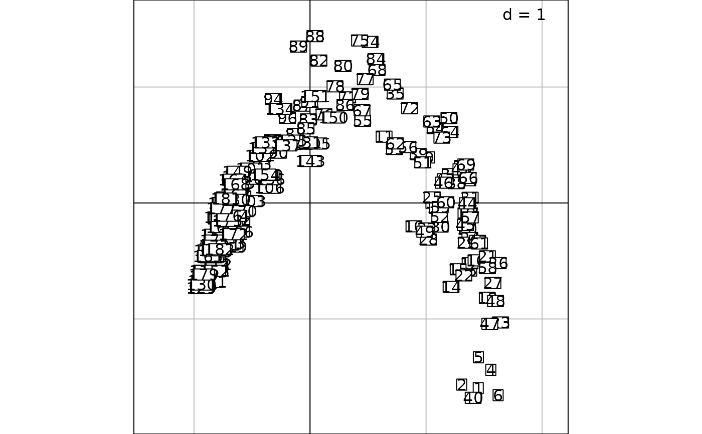
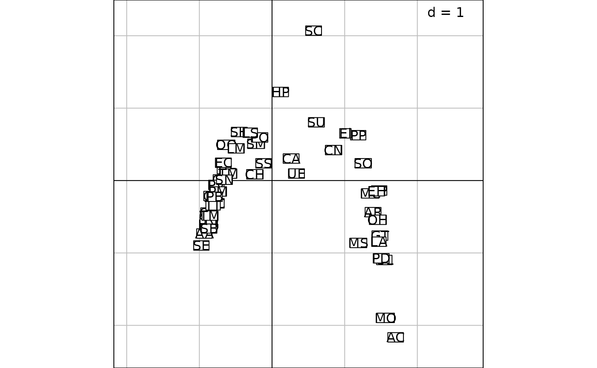

Adds histograms and density lines against a bi-dimensional graphics.
addhist.RdAdds the two marginal histograms and density lines of each axis against an ADEg.S2 object.
Usage
addhist(object, bandwidth, gridsize = 60, kernel = "normal", cbreaks = 2,
storeData = TRUE, plot = TRUE, pos = -1, ...)Arguments
- object
an
ADEg.S2object- bandwidth
used for the calculations of the density lines (see the
bkdefunction of theKernSmoothpackage).- gridsize
used for the calculations of the density lines (see the
bkdefunction of theKernSmoothpackage).- kernel
used for the calculations of the density lines (see the
bkdefunction of theKernSmoothpackage).- cbreaks
number of cells for the histograms per interval of the grid of the bi-dimensional graphics.
- plot
a logical indicating if the graphics is displayed
- storeData
a logical indicating if the data should be stored in the returned object. If
FALSE, only the names of the data arguments are stored- pos
an integer indicating the position of the environment where the data are stored, relative to the environment where the function is called. Useful only if
storeDataisFALSE- ...
Additional graphical parameters (see
adegparandtrellis.par.get)
Value
An ADEgS object, a list of four graphical objects,
one ADEg.S2 and three trellis (from lattice).
Their names are:
objectthe
ADEg.S2objectdensXtop histogram, a
trellisobjectdensYright histogram, a
trellisobjectlinkcorner graphics linking the two histograms, a
trellisobject
Author
Alice Julien-Laferriere, Aurelie Siberchicot aurelie.siberchicot@univ-lyon1.fr and Stephane Dray
Note
Into the dots arguments, the usual parameters for the s.label
can be given with the object key.
Trellis parameters are used for the three remaining graphics.
plot.polygon handles the histogram aspect, add.line the
graduations lines and plot.line the density lines.
Finally, for the link graphic, labels aspect can be changed
using a plabels list, as for an S2.label object.
Examples
data(rpjdl, package = "ade4")
coa1 <- ade4::dudi.coa(rpjdl$fau, scannf = FALSE, nf = 4)
labli <- s.label(coa1$li)

g1 <- addhist(labli)
#> Error in eval(dfxycall): object 'labli' not found
g2 <- addhist(labli, plabels.cex = 0, cbreaks = 3)
#> Error in eval(dfxycall): object 'labli' not found
labco <- s.label(coa1$co)

g3 <- addhist(labco, plabels.cex = 0, cbreaks = 3)
#> Error in eval(dfxycall): object 'labco' not found
update(g3, pbackground.col = "grey85")
#> Error in h(simpleError(msg, call)): error in evaluating the argument 'object' in selecting a method for function 'update': object 'g3' not found